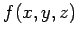
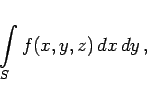
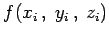
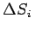
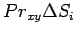
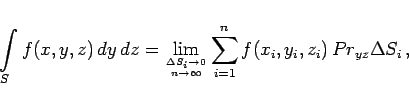

Inhalt Index DeskTop Bronstein

 Integralrechnung Oberflächenintegrale Oberflächenintegrale 2. Art Begriff des Oberflächenintegrals 2. Art
Integralrechnung Oberflächenintegrale Oberflächenintegrale 2. Art Begriff des Oberflächenintegrals 2. Art


Oberflächenintegral 2. Art einer Funktion von drei Veränderlichen , die in einem zusammenhängenden Gebiet definiert ist, nennt man das Integral
|  | (8.156) |
das über die Projektion auf die x,y-Ebene eines orientierten, in dem gleichen Gebiet liegenden Flächenstückes S genomen wird. Der Zahlenwert des Integrals wird ebenso gewonnen, wie der des Oberflächenintegrals 1. Art, ausgenommen den dritten Schritt, bei dem der Funktionswert  nicht mit dem Flächenelement , sondern mit dessen Projektion , orientiert auf die x,y-Ebene, zu multiplizieren ist. Damit ergibt sich:
In Analogie dazu werden die Oberflächenintegrale 2. Art über die Projektionen des orientierten Flächenstückes S auf die y,z- und die z,x-Ebene wie folgt berechnet:
|  | (8.157b) |